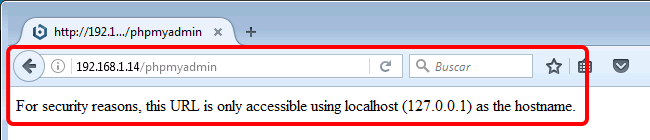
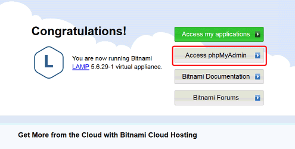
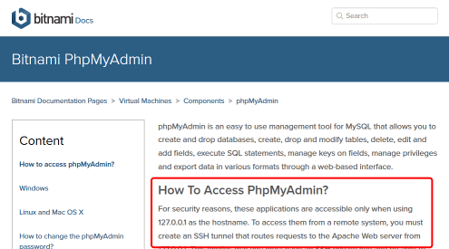
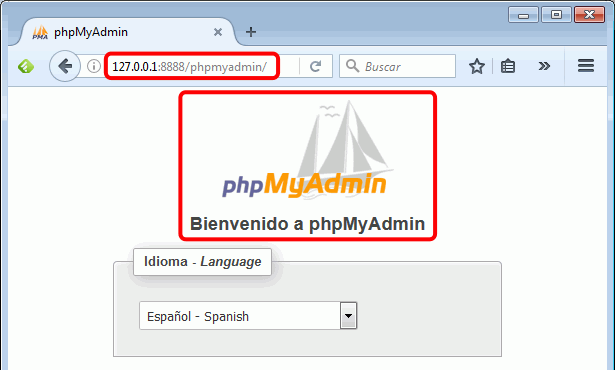
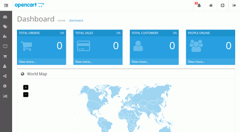
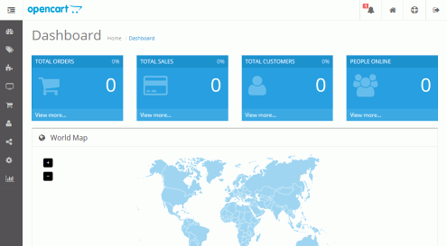

Bitnami (2) 2 - phpMyAdmin
Documentación de Bitnami:
- phpMyAdmin: en máquina virtual - en instalador
- SSH: en máquina virtual - https://wiki.bitnami.com/Virtual_Appliances_Quick_Start_Guide#How_to_enable_sshd.3f
- Compruebe que no puede acceder la aplicación phpMyAdmin instalada en la máquina virtual:

- En la página inicial de la web de la máquina virtual se encuentra un enlace a la documentación de Bitnami sobre phpMyAdmin::
 
- En esa documentación se explica qué por motivos de seguridad sólo se permite conectarse a phpMyAdmin con direcciones locales (127.0.0.1) y que desde otros equipos debe hacerse a través de un túnel SSH (127.0.0.1:8888). Compruebe que sin abrir el túnel tampoco puede realizar la conexión desde el ordenador anfitrión:

- Configure la máquina virtual y el ordenador anfitrión siguiendo las instrucciones de la documentación de Bitnami, de manera que pueda acceder al phpMyAdmin que está instalado en la máquina virtual a través de un túnel SSH:

Si tiene problemas para seguir las instrucciones de la documentación de Bitnami, los pasos siguientes resumen esas instrucciones. En caso necesario, puede consultar la lección Bitnami Varios o las soluciones Bitnami (2) que explican cómo realizar esos pasos.
Realice los siguientes pasos en la máquina virtual:
- Entre en la máquina virtual LAMP
- Por comodidad, reconfigure el teclado al teclado español
- Arranque el servicio SSH. Antes deberá crear el archivo de configuración del servicio, que de forma predeterminada está como fichero .back.
Realice los siguientes pasos en el ordenador anfitrión:
- Instale PuTTY en el ordenador anfitrión
- Configure, guarde una sesión de PuTTY con los siguientes parámetros y abra la sesión:
- Session > Host name: IP de la máquina virtual
- Session > Port: 22
- Session > Saved Sessions: Bitnami Lampstack (por ejemplo)
- Session > Save
- Connection > SSH > Tunnels > Source port: 8888
- Connection > SSH > Tunnels > Destination: localhost:80
- Connection > SSH > Tunnels > Add
- Session > Save
- Session > Open
Ahora debería poder conectar a phpMyAdmin desde el ordenador anfitrión:
 
